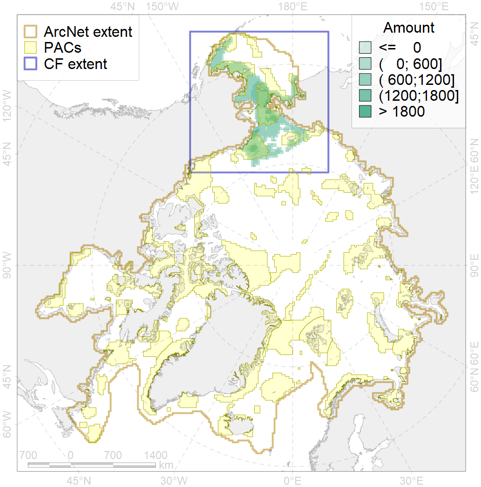
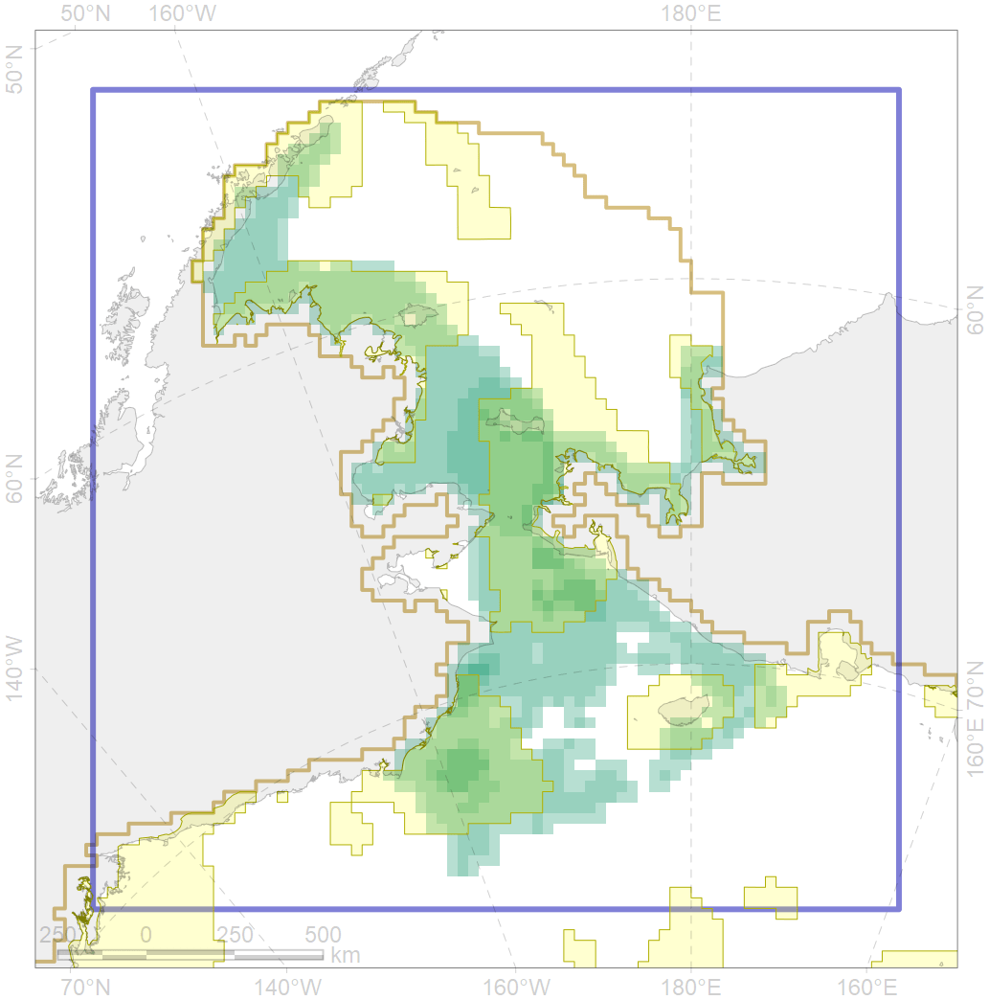

1018

| CF ID | 1018 |
| CF Name | Pacific Walrus Summer-Autumn Distribution |
| Time Period | 1982-2016 |
| Source(s) | http://ak.audubon.org/conservation/ecological-atlas-bering-chukchi-and-beaufort-seas |
| Seasonality | June-November |
| Depth Horizon | 0-200m |
| Methodology | Data assembled from multiple datasets |
| Author Name | Maria Solovyeva |
| Notes | |
| Conservation Target Set in the Scenario | 0.24 |
| Conservation Target Achieved in the Scenario | 0.561 (Scenario: 233.8%) |
| PAC ID | Proportion in the PAC | Contribution to ArcNet Target Achievement | PAC’s Contribution to the Achieved Target |
|---|---|---|---|
| 1 | 1.1% | 4.5% | 1.9% |
| 3 | 9.2% | 35.5% | 15.2% |
| 4 | 1.8% | 6.0% | 2.6% |
| 5 | 28.7% | 112.3% | 48.0% |
| 7 | 1.4% | 5.9% | 2.5% |
| 8 | 0.6% | 1.7% | 0.7% |
| 60 | 16.0% | 60.7% | 26.0% |
| inner | 58.8% | 226.6% | 96.9% |
| outer | 41.2% | 7.2% | 3.1% |